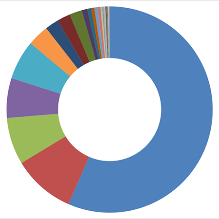

Espécies de plantas visitadas por Centris (Heterocentris) analis (Fabricius, 1804)

Malpighia emarginata DC. Recurso: óleo + pólen
Outras
 Heteropterys sp. Recurso: óleo + pólen
Heteropterys sp. Recurso: óleo + pólen
 Crotalaria pallida Recurso: néctar
Crotalaria pallida Recurso: néctar
 Banisteriopsis sp. Recurso: óleo + pólen
Banisteriopsis sp. Recurso: óleo + pólen
 Erythrina sect. cristae-galli Krukoff Recurso: pólen + néctar
Erythrina sect. cristae-galli Krukoff Recurso: pólen + néctar
Cedrela fissilis Recurso: néctar
Machaerium hirtum Recurso: néctar
 Machaerium sp. Recurso: néctar
Machaerium sp. Recurso: néctar
 Cassia fistula Recurso: pólen
Cassia fistula Recurso: pólenCrotalaria brachystachya Recurso: néctar
 Malphigiaceae sp1 Recurso: óleo + pólen
Malphigiaceae sp1 Recurso: óleo + pólen
Alysicarpus vaginalis (L.) DC Recurso: néctar